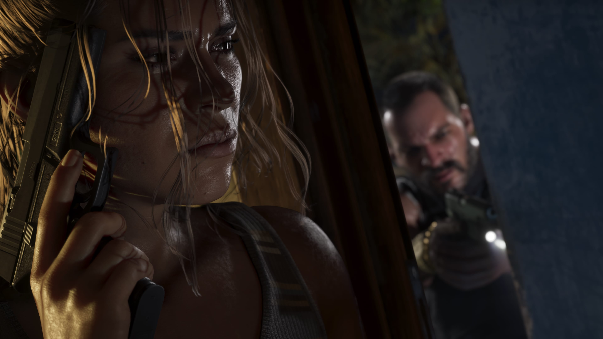
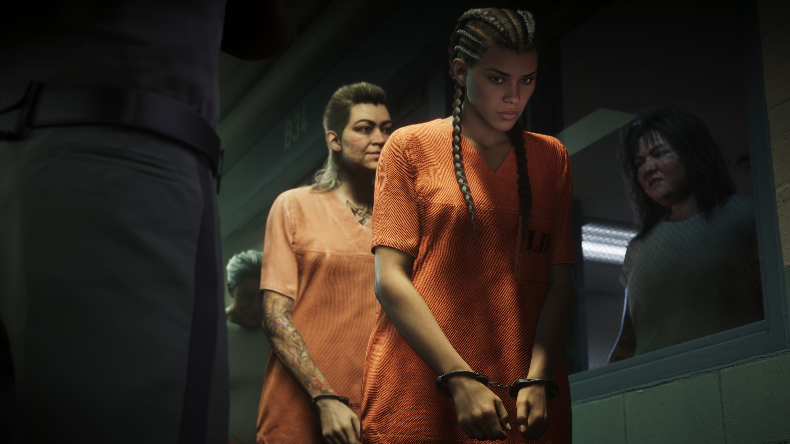

Jason Duval
Parceiro de Lucia e coprotagonista de GTA VI. Depois que um serviço dá errado, os dois precisam confiar um no outro para enfrentar a situação.
Conhecer Jason

Lucia Caminos é uma das protagonistas de Grand Theft Auto VI. Seu pai ensinou-a a lutar desde muito jovem, e sua determinação em proteger a família acabou levando-a à Penitenciária de Leonida.
Depois de conseguir sair da prisão, Lucia pretende mudar o rumo de sua vida. Ao lado de Jason Duval, ela acaba no centro de uma conspiração criminal que atravessa o estado de Leonida.
Lucia aprendeu desde cedo que precisava saber se defender. Seu pai ensinou-a a lutar ainda jovem, preparando-a para enfrentar uma vida que nem sempre seria fácil.
Sua determinação em lutar pela família acabou colocando-a em uma situação que mudou sua vida: Lucia foi parar na Penitenciária de Leonida.
O material oficial apresentado para GTA VI mostra Lucia deixando a prisão e determinada a construir um futuro diferente para si mesma.
Ela quer a boa vida que sua mãe sonhava desde os tempos de Liberty City e, desta vez, pretende seguir um plano para conseguir chegar lá.

Antes dos acontecimentos centrais de GTA VI, Lucia esteve presa na Penitenciária de Leonida.
Segundo sua apresentação oficial, lutar pela família foi o que acabou levando Lucia até lá.
A sorte, porém, esteve ao seu lado e permitiu que ela saísse da prisão.
Sua liberdade marca o início de uma nova fase. Lucia sabe o que deseja para o futuro e está determinada a seguir seu plano para conseguir uma vida melhor.
Lucia e Jason formam a dupla central da história apresentada para Grand Theft Auto VI.
Quando um serviço aparentemente simples dá errado, os dois acabam no lado mais sombrio do lugar mais ensolarado da América.
A situação os envolve em uma conspiração criminal que atravessa o estado de Leonida e faz com que precisem confiar um no outro mais do que nunca.
A parceria entre Lucia e Jason ocupa, portanto, uma posição central na história conhecida de GTA VI.
Conhecer Jason Duval
Lucia não pretende simplesmente voltar à vida que tinha antes de sua passagem pela prisão.
Sua apresentação oficial revela que ela deseja a boa vida que sua mãe sonhava desde os tempos em Liberty City.
Para Lucia, conseguir esse futuro exige mais do que sorte. Ela está determinada a seguir um plano e tomar as decisões necessárias para mudar sua vida.
Essa determinação ajuda a estabelecer uma das características mais importantes apresentadas oficialmente para a personagem.

Relações apresentadas oficialmente ou diretamente mencionadas na história conhecida da personagem.
Parceiro de Lucia e coprotagonista de GTA VI. Depois que um serviço dá errado, os dois precisam confiar um no outro para enfrentar a situação.
Conhecer JasonO pai de Lucia ensinou-a a lutar desde muito jovem, algo que faz parte da história oficialmente apresentada para a personagem.
Lucia busca a boa vida que sua mãe sonhava desde os tempos em Liberty City, objetivo que influencia seus planos para o futuro.
Imagens oficiais da personagem divulgadas para Grand Theft Auto VI.
Esta área reúne apenas informações apresentadas oficialmente para a personagem.
Lucia é uma das protagonistas de GTA VI ao lado de Jason Duval.
Lucia esteve presa na Penitenciária de Leonida.
Lutar pela família foi o que acabou levando Lucia à prisão.
O pai de Lucia ensinou-a a lutar desde muito jovem.
A mãe de Lucia sonhava com uma vida melhor desde os tempos em Liberty City.
Lucia e Jason formam a dupla central da história apresentada para GTA VI.
As informações desta página são baseadas em materiais oficiais publicados pela Rockstar Games.
Página oficial de GTA VI com informações sobre Lucia, Jason, Leonida e a história do jogo.
Rockstar GamesApresentação oficial de Lucia Caminos e de outros personagens de Grand Theft Auto VI.
Ver fonte oficial